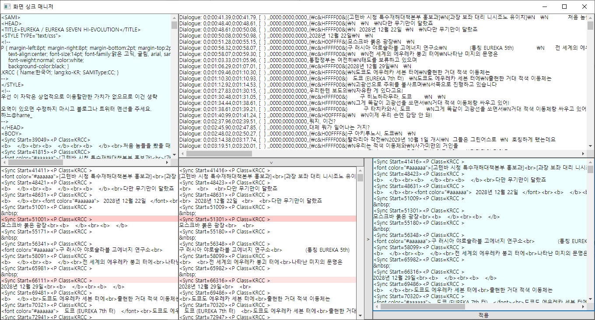

이 도움말은 구버전에 대한 도움말입니다.
현재는 Aegisub 같은 프로그램의 도움 없이 기능이 내재화되어 있습니다.
기존 버전에서 업데이트한 경우 메뉴에 도움말 링크가 남아있어서 남겨둔 페이지입니다.

①
②
③
④
⑤
최초 실행 시 에디터 전체 혹은 선택 영역에 대해 일반 싱크는 ①로, 화면 싱크는 ②로 분리되며 ③에는 화면 싱크를 ASS 자막으로 변환한 결과가 나옵니다.
③의 ASS 자막 형태 변환값을 Aegisub에 복사해서 싱크를 프레임 단위로 맞춰줍니다. 시작 싱크 작업 대상은 '［', 종료 싱크 작업 대상은 '］'으로 표현되며, Aegisub상에서 색상으로도 구별할 수 있습니다. ※ Ctrl+3/4 단축키를 숙지하면 편리합니다. ※ 메뉴/단축키 설정에 'SyncManager' 대신 'SyncManager0'을 사용하면 시작 싱크를 맞추는 형식으로 통일됩니다.
Aegisub에서 작업한 결과물을 다시 ③에 붙여넣고[∨]버튼을 누르면 ④에 SMI로 변환한 결과물이 나옵니다.
원래 싱크와 작업한 싱크의 오차가 0.2초를 넘을 경우 빨간색으로 경고가 표시됩니다.
0.5초가 넘는 수정이나 싱크 누락·겹침이 발생할 경우 진행이 차단됩니다. ※ 실제로 0.5초 이상 옮겨야 할 경우 ②의 싱크를 임의로 수정할 수 있습니다.
진행이 가능한 경우 [>]버튼을 누르면 ②의 텍스트와 ④의 싱크를 결합한 결과물을 ⑤에 출력합니다.